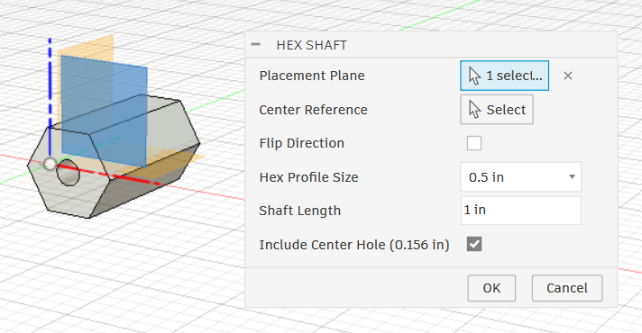
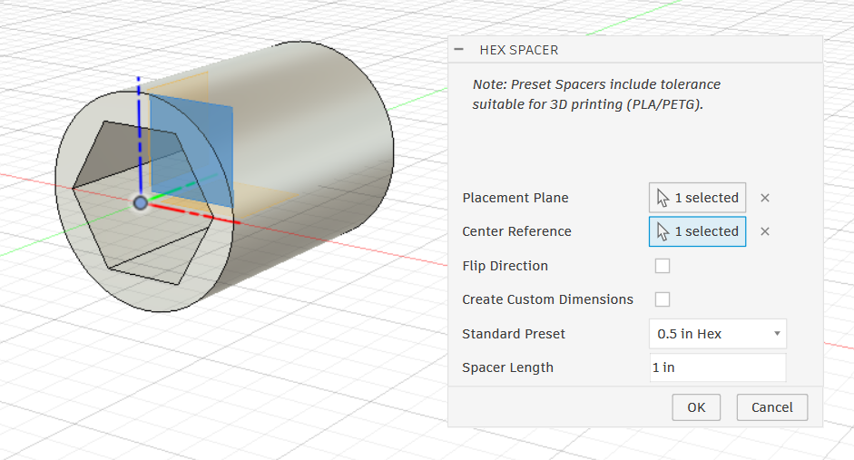
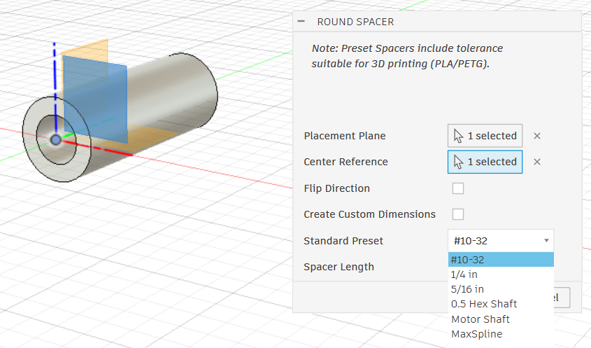

Generate vendor shafts and spacers instantly
Installation Guide
- Download the latest
.zipfile from the Releases page. - Extract the folder to your Autodesk Fusion Add-ins directory (Usually any folder works).
- Open Autodesk Fusion and navigate to Utilities > ADD-INS > Scripts and Add-ins.
- Select the Add-Ins tab and click the green + icon.
- Select Script or add-in from device.
- Select the extracted folder.
- Activate the Run on Startup checkbox.
- Click the Run toggle.
Current version includes
Vendor Shaft generator
For Max Spline, Spline XL, Round Hex & others.

Hex Shaft generator
With presets for drilled 0.5 & 0.375.

Hex Spacer generator
With preset tolerances for 3D printing.

Round Spacer generator
With presets for #10-32 bolts and other common hardware.
